How to build a linear model
linstats package provides a uniform mechanism for building any supported linear model. Once built the same model can be analyzed in many ways including least-squares regression, fit and lack-of-fit statistics, ANOVA (or ANACOVA), MANOVA (or MANACOVA) This tutorial will use several examples to show how to build different types of models.
Contents
- Goals
- Continuous predictor variable
- Using encode for continuous variables
- Using encode for categorical variables
- overdetermined encoding of categorical variables
- model design
- solving an overdetermined model
- Singularity Warnings
- Constraints matrix
- building a full rank (nominal) model
- Inspecting a model
- solving a full rank model
- building an ordinal model
- Solving an ordinal model
- Models with more than one explanatory variable
- Models with both categorical and continuous variables
- Custom Models
- More complex custom model
- Missing values
- Multiple Response Variables
- Missing Values with Multiple Responses
- Imputing missing values (I)
- Imputing missing values (II)
- Nested models
- Nested data
- Setting up unnested model on nested data
- Setting up a nested model
- Solving a nested model I
Goals
This is an introduction of how to build a model using linstats. It will describe how to use models with various types of predictor variables, such as continuous or categorical. It will explain how categorical variables are encoded and how to interpret the constructed model. Functions that work with the model will be illustrated as needed, but will also be explained in more detail elsewhere.
Continuous predictor variable
say we want to construct a model where
y = beta(1) + beta(2)*x + e
where beta are unknown constants and x is a predictor variable
and e is an independent error term.
In this context we may want to estimate the coefficients based on a set
of data. beta(1) is the overall mean response at x=0. and beta(2) is the
incremental increase in y as x increases by 1.% In the carsmall example we want to learn something about % relationship between engine size and horsepower in cars currently on the % market. We let y be the horsepower and x be the displacement. A % plot would look like this load carsmall plot(Displacement, Horsepower,'.'); xlabel('displacement'); ylabel('horsepower');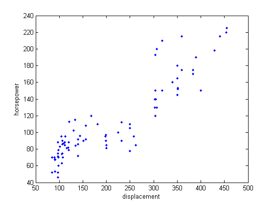
Using encode for continuous variables
encode is the main function to build a linear model. The api is straightforward enough, but a few conventions need to be known. They will be explained as they are encountered throughout this tutorial
% Build a model containing a continuous variable % Horsepower = Beta(1) + Beta(2)*Displacement + e glm = encode( Horsepower, 0, 1, Displacement ); % the first argument to encode is the response variable. It may % contain nans. % the second argument indicates whattype of predictor variables are the % model. If it is empty encode will do its best to % figure out the type of variable by calling the function isdiscrete. % Above we used the code 0 to mean that the predictor is % continuous and it should be used as is. Other possible values are % discussed below % the third argument specifies the model, that is, how the predictor % variables are combined. In this simple example we use the scalar % value 1 to mean 1st degree (no-interactions). More complex uses of % model are discussed below % The output of encode is a complete model specification stored as a % structure that I usually call glm. The fields of this structure will be % explained as needed. The main thing that encode does in this case is % build a model containing an coefficient for the intercept and the slope. % At this point we may want to estimate the coefficients. ls = solve( glm ); % ls is a structure that contains the least-squares estimates of each % coefficient, plus other values that aren't needed right now % draw the reference line plot(Displacement, Horsepower,'.'); xlabel('displacement'); ylabel('horsepower'); h = refline( ls.beta(2), ls.beta(1) ); set(h,'color', 'k', 'linestyle', '-.'); % show the model illustrating the relationship of Displacment to the % expected value of horsepower text( 75,200, ... sprintf( '$\\hat{y}_i = %2.2f + %2.2fx_i$', ... ls.beta(1),ls.beta(2)), 'interpreter', 'latex', 'fontsize', 14 );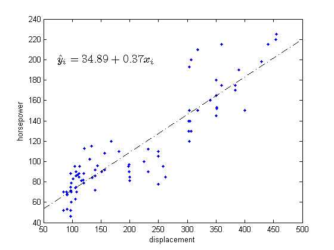
Using encode for categorical variables
A categorical variable is one that takes on discrete values. For example, Color of Eyes might be treated as categorical variable, taking on the levels Blue, Green, Gray. The function encode can be used to build models that have categorical variables. I will use part of the carsmall dataset to illustrate how categorical variables are encoded. In the model I will develop, Country of Origin will be a factor and I will determine whether there is a relationship between this variable and MPG. Initially Country of Origin takes on the following levels 'France' 'Germany' 'Italy' 'Japan' 'Sweden' 'USA' I will limit the data to France, Sweden and Italy to explain the concept of encoding, but the principals work with any number of factor levels
load carsmall; % load the data i = ismember( Origin, {'France', 'Sweden', 'Italy'} ); % find data origin = Origin(i,:); % limit origins mpg = MPG(i); % limit responses plot_table( crosstab2( origin ) );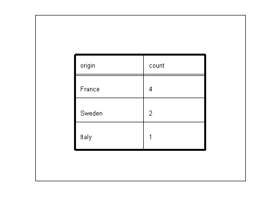
overdetermined encoding of categorical variables
There are many ways to encode categorical variables. In the following examples, I will show three ways that are supported by encode. I will also explain the advantages of each form of encoding. The so-called overdetermined form of encoding is the easiest to understand, so I will start with it. I use this form whenever I am interested in estimating or comparing the response of separate factor levels. It is also appropriate for ANOVA models and is supported throughout the linstats package.
newplot axis([0 1 0 1]); set(gca,'xtick', [],'ytick',[]); title( 'overdetermined encoding of categorical variables'); glm = encode( mpg, 3, 1, origin ); % Encoding categorical variables is similar to encoding continuous % variable. The only differences is that the second argument is 3, which % tells encode to use the the overdetermined form of encoding. In % overdetermined form an indicator variable is created for each level of % the categorical variable. In this example, the variable Origin has 3 % levels (Sweden, Germany and Italy) so three indicator variables are % created. This adds three terms to a model that also has an intercept % term. % An indicator value takes on the values 1 or 0 in this style of encoding % and can be thought of as a boolean switch for each observation. If the % ith observation is from the jth level then X(i,j) is 1 otherwise it is % zero. % The full equation is as shown with the name of each term above The % predictor variables, X1..X4, take on the values of 0 or 1 and they act as % a switch. For a given car exactly one of the Xs is equal to 1 and the % remaining Xs are equal to zero. newplot; axis([0 1 0 1]); text(0.05,.97, 'MPG Intercept France Sweden Italy Error' ); line( [0.05 .7], [.94 .94], 'linestyle', '-','color','k' ); text(0.05,.9, 'y_i = \beta_1*X_i_1 + \beta_2*X_i_2 + \beta_3*X_i_3 + \beta_4*X_i_4 + \epsilon_i' ); set(gca,'xtick',[],'ytick',[]); h(1) = text(0.05,.8, ' i = 1..m car models examined'); h(2) = text(0.05,.7, ' X_i_1 = 1'); h(3) = text(0.05,.6, ' X_i_2 = 1 if y_i is from France, otherwise 0'); h(4) = text(0.05,.5, ' X_i_3 = 1 if y_i is from Sweden, otherwise 0'); h(5) = text(0.05,.4, ' X_i_4 = 1 if y_i is from Italy, otherwise 0');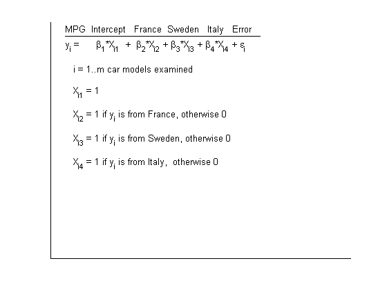
model design
the model is encoded in a matrix called the design matrix, and is stored in glm.dmat. It is small enough to write out all the equations. The equation takes on the following form in matrix notation y = glm.dmat*beta + error
delete(h); title('complete set of equations') h = text(0.05,.6, sprintf('%d = \\beta_1*%d + \\beta_2*%d + \\beta_3*%d + \\beta_4*%d + \\epsilon_{%2d}\n',[glm.y glm.dmat (1:6)']'));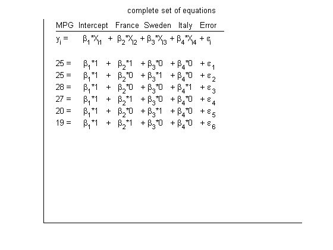
solving an overdetermined model
Solving the equations for an overdetermined model uniquely is not possible. To create a unique solution that is meaningful, we apply a constraint so that the coefficients for each factor sum to 0. In this case these are beta(2)...beta(4). The interpretation of the solution is then easy. The first term is the grand mean and each of the other coefficients are are offsets from it.
delete(h); title('equations in matrix form'); h = text( 0.05, .83, 'y = X*\beta' ); h(2) = text( 0.05, .76, 'we need to solve for \beta' );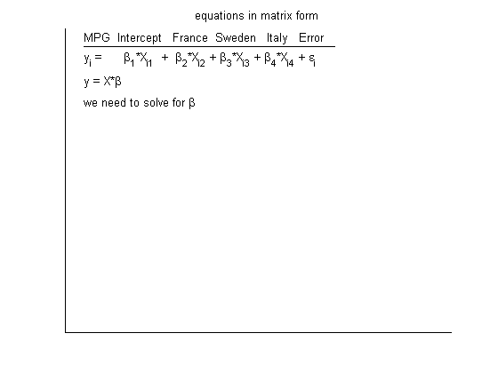
Singularity Warnings
You may get warnings that a matrix is singular to working precision. This does not necessarily mean that answers are incorrect. It does mean that there is more than one solution, and whether this influences the answers you are interested in is a different question. having more than one possible least-squares solution means that the best-fit can be achieved with infinite number of coefficients. However, the predicted response is the same in all cases, so statistical inferences that are based on sums of the squared residuals aren't expected to change. Linstats is designed so that it will return answers where it can, otherwise it will return non-finite numbers. Whenever a singularity is encounter a warning is issued to let you know there maybe problems, particularly with the parameter estimates.
If you solve an overdetermined system of equations without the constraints matrix. This will produce a singularity warning. you can inspect the system and see why by calling issingular; The table reveals that without the constraints. the design matrix column for italy (the variable is called origin=Italy) is a combination of the other columns of the desgin matrix. Namely, Italy = intercept - France - Sweden.
figure('pos', [554 590 715 361]); glm = encode( mpg, 3, 1, origin ); glm.cmat = []; % remove constraint to cause singularity [singular, b, c0, txt] = issingular( glm ); % find singularity plot_table( {'singularity details'}, txt );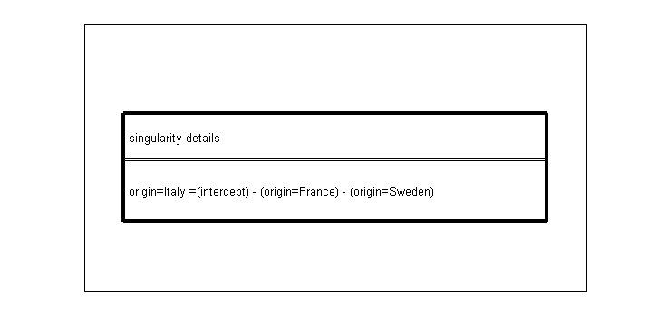
Constraints matrix
The structure returned by encode contains a constraints matrix. A constraints matrix restrict the possible solutions so that certain coefficients sum to 0. Each row of the constraints matrix confines one group of coefficients. The column of the matrix refers to one of the coefficients in the model. In our example the constraints matrix, shown in the figure as cmat has four columns. One for the intercept, and one for each country of origin. The first value in cmat is zero meaning the first coefficient in the model can take on any value. The remaining values in the constraint are 1, indicating that the coefficients for the corresponding positions must sum to 0. To solve WITH a constraints matrix you can do either solve(glm.dmat, glm.y, glm.cmat) OR equivalently solve(glm); % recommended, uses glm.cmat if it is present In either case a unique solution is found. You can see that the constraint was observed. beta(2)+beta(3)+beta(4) = 0; You can add any number of constraints if you wish
newplot glm = encode( mpg, 3, 1, origin ); glm.ls = solve(glm); h(2) = text( 0.2,.76, 'with the following constraints '); h(3) = text( 0.10,.68,'$\sum_{j=2}^{4} \beta_{j} = 0$', 'interpreter', 'latex' ); h(4) = text( 0.05,.6, 'cmat = [0 1 1 1]' ); h(5) = text( 0.05,.5, 'solution' ); h(5) = text( 0.1,.3, sprintf('\\beta_%d = %2.2f\n', [(1:4)' glm.ls.beta]' ) ); % If you are interested in the average value of each level, which is % sometimes called the marginal mean, because it takes into account other % factors in the model, you can use lsestimates m = lsestimates(glm); h(3) = text( 0.1,.1, sprintf('France = %2.2f\nSweden = %2.2f\nItaly = %2.2f', m.beta(2:end)));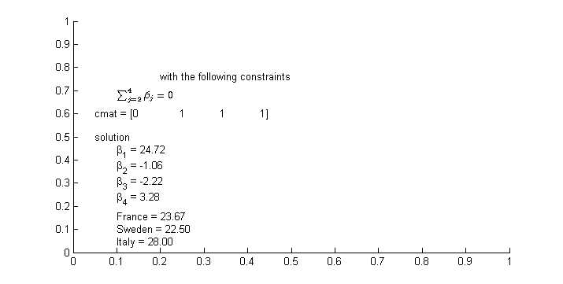
building a full rank (nominal) model
Another way to encode categorical variables is a method that SAS/JMP calls nominal. I will illustrate it with using three variables in the model. This form is appropriate to use when using an ANOVA model, and when you need a full-rank design matrix (e.g. regstats requires this). This form of encoding results in a smaller design matrix and may be somewhat faster for models with a very large number of factor levels.
newplot load carsmall; % load the data i = ismember( Origin, {'Sweden', 'France', 'Italy'} ); % limit to three countries origin = Origin(i,:); mpg = MPG(i); glm = encode( mpg, 1, [], origin ); % the only difference between this and the overdetermined example is that % the second argument is 1. This tells encode to treat the Origin as % a categorical variable and specifically chooses the nominal form % of encoding. % In nomimal encoding, indicator variable are created for one less than % the number of levels of the categorical variable. In this example, the % variable origin has 3 levels (Sweden, France and Italy) so two indicator % variables are created. This adds two terms to the model that also includes % an intercept term. % The full equation is as shown % The variables X(1),X(2) take on the values of -1, 0 or 1 and when % multiplied by the associated coefficients and added together the add % up to the mean reponse for that factor level % one fact that may not be obvious is that the encoding used here is a null % space of the contraints matrix from the overdetermined form. Above the % constraints matrix was [1 1 1] for the 3 levels of the only variable % (origin). To see this multiple the constraints matrix times the encoding % scheme matrix % [ 1 1 1] * [ -1 -1; % 1 0; % 0 1] = 0; % In fact, when solving an overdetermined form produced by encode, the % design matrix in glm.dmat is multiplied by the null space of the % constraints matrix, which in effect, produces a unique design matrix % similar to that produced by the nominal encoding newplot; axis([0 1 0 1]); text(0.05,.97, 'MPG Intercept France/-Italy Sweden/-Italy Error' ); line( [0.05 .7], [.94 .94], 'linestyle', '-','color','k' ); text(0.05,.9, 'y_i = \beta_1*X_i_1 + \beta_2*X_i_2 + \beta_3*X_i_3 + \epsilon_i' ); set(gca,'xtick',[],'ytick',[]); h(1) = text(0.05,.8, ' i = 1..m car models examined'); h(2) = text(0.05,.73, ' X_i_1 = 1'); h(3) = text(0.05,.66, ' X_i_2 = 1 if y_i is from France, -1 if from Italy, otherwise 0'); h(4) = text(0.05,.59, ' X_i_2 = 3 if y_i is from Sweden, -1 if from Italy, otherwise 0'); h(5) = text(0.05,.52, ' cmat = 0 0 0 \betas are unconstrained' ); h(6) = text(0.05,.45, ' dmat = X_1 X_2 X_3' ); h(7) = text(0.05,.24, sprintf(' %2d %2d %2d\n', glm.dmat' ) ); %#ok

Inspecting a model
there are a couple of utilities that are useful for getting a textual representation of a model. The first is model2eqn. This function takes a model matrix and a vector of variable names and builds readable names for each model terms. This can also be used to describe the coefficient names. Actually, encode does this when it calulcates glm.coeff_names. The second tool is coeff2eqn. This function is useful to describe contrasts and you can find examples in lscontrast
newplot
tbl = table( {'model term'}, model2eqn(glm.model, glm.var_names) );
plot_table(tbl);
[x,y] = getAxisInset(.1,.9);
text(x,y, 'Using model2eqn to describe model terms');
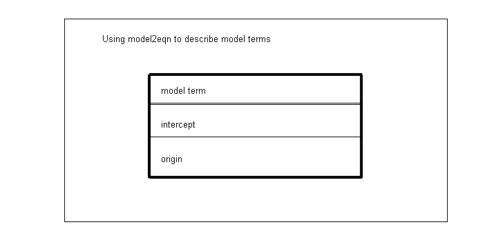 solving a full rank model
Solving a full rank model is the same as solving an overdetermined
model. just call
glm.ls = solve(glm); OR equivalently
glm.ls = solve(glm.dmat, glm.y);
The solution in this case is unique even without constraints, but the
interpretion the coefficients for country of origin is slightly
more complicated. The least-squares mean estimate for France is beta(1) + beta(2)
for Sweden it is beta(1) + beta(3). and for Italy it is beta(1) -
beta(2) - beta(3);
The least squares estimated mean response for both countries is, of course,
the same value as before.
delete(h);newplot h = text( 0.05, .8, 'solving for \beta' ); glm.ls = solve(glm); h(2) = text( 0.1,.6, sprintf('\\beta_%d = %2.2f\n', [(1:3)' glm.ls.beta]' ) ); L = [1 1 0; % beta(1) + beta(2) = France 1 0 1; % beta(1) + beta(3) = Sweden 1 -1 -1]; % beta(1) - beta(2) - beta(3) = Italy m = L*glm.ls.beta; h(3) = text( 0.1,.4, sprintf('France = %2.2f\nSweden = %2.2f\nItaly = %2.2f', m));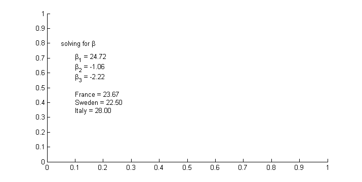
building an ordinal model
Another way to encode categorical variables is a method that SAS/JMP calls ordinal. It works like this.
i = ismember( Origin, {'Sweden', 'France', 'Italy'} ); % limit to three countries
origin = Origin(i,:);
mpg = MPG(i);
glm = encode( mpg, 2, [], origin );
% Here the second input argument to encode is a 2. This tells encode to
% treat the Origin as a categorical variable and specifically chooses the
% nominal form of encoding.
% In nominal form indicators variable are created for one less than
% the number of levels of the categorical variable. In this example, the
% variable origin has 2 levels (Sweden and Germany) so one indicator
% variables is created. This adds one terms to the model that also includes
% an intercept term.
% Each new indicator variable would be ones for all the variables preceding
% it in the equation.
newplot;
axis([0 1 0 1]);
text(0.05,.97, 'MPG Intercept Sweden-France Italy-Sweden Error' );
line( [0.05 .7], [.94 .94], 'linestyle', '-','color','k' );
text(0.05,.9, 'y_i = \beta_1*X_i_1 + \beta_2*X_i_2 + \beta_3*X_i_3 + \epsilon_i' );
set(gca,'xtick',[],'ytick',[]);
h(1) = text(0.05,.8, ' i = 1..m car models examined');
h(2) = text(0.05,.73, ' X_i_1 = 1');
h(3) = text(0.05,.66, ' X_i_2 = 0 if y_i is from France, otherwise 1');
h(4) = text(0.05,.59, ' X_i_2 = 0 if y_i is from France or Sweden, otherwise 1');
h(5) = text(0.05,.52, ' cmat = 0 0 0 \betas are unconstrained' );
h(6) = text(0.05,.45, ' dmat = X_1 X_2 X_3' );
h(7) = text(0.05,.24, sprintf(' %2d %2d %2d\n', glm.dmat' ) );

Solving an ordinal model
Solving this model is done the same way as every other model. just call
glm.ls = solve(glm); OR equivalently
glm.ls = solve(glm.dmat, glm.y);
The solution in this case is unique even without constraints, but the
interpretion the coefficients for country of origin is more complicated
The least-squares mean estimate for France is beta(1)
for Sweden it is beta(1) + beta(2) and for Italy it is beta(1) +
beta(2) + beta(3); The least squares estimated mean response all countries
is, of course, the same value as before.
As you can see each coefficient is related to the previous coefficients
in the same factor. It is appropriate to use ordinal model when the
different factor levels are qualitative and have a natural ordering.
For example, small, medium and large. This way the coefficients will be
relative to the next smaller level. When using ordinal models it is best
that the factors be numberic. The reason for this is that the
design matrix is automatically built correctly for numerical data since
it sorts in an intuitive fasion. If your nominal levels were text, then
the model will be built in the order of occurence of the factors.delete(h); h = text( 0.05, .8, 'solving for \beta' ); glm.ls = solve(glm); h(2) = text( 0.1,.6, sprintf('\\beta_%d = %2.2f\n', [(1:3)' glm.ls.beta]' ) ); L = [1 0 0; % beta(1) = France 1 1 0; % beta(1) + beta(2) = Sweden 1 1 1]; % beta(1) + beta(2) + beta(3) = Italy m = L*glm.ls.beta; h(3) = text( 0.1,.4, sprintf('France = %2.2f\nSweden = %2.2f\nItaly = %2.2f', m));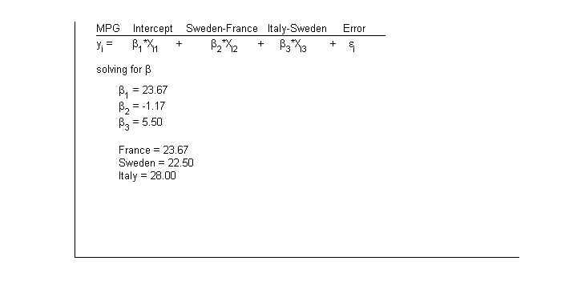
Models with more than one explanatory variable
models with more than one variable are dealt with easily using carsmall example, say that we want to explore the effect of model_year on mpg, but to take into account the categorical variable cyclinders. This is done as follows
load carsmall ModelYear = Model_Year; glm = encode( MPG, 3,1,ModelYear, Cylinders); % the second input to encode is a 3, telling encode to use overdetemined % form for all the variables, we could also have used a 1 for nominal or a % 2 for ordinal encoding. The 3rd input is a 1, which tells encode to use a % first degree model that considers only the main effect of model_year and % cylinders, but does not include interactions between model_year and % cylinders. % this model is solved like all the others glm.ls = solve(glm); % you can plot the results using iplot. % this shows the average mpg for the first term in the equation, which in % this case is ModelYear iplot( glm, 1 );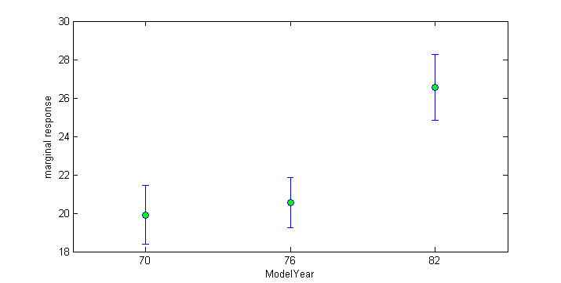
Models with both categorical and continuous variables
It is relatively common that both categorical and continuous variables exist in the same model. I'll show how encode supports this with the carsmall example lets say we want to see how mpg has changed over time, but we also want to account for changes in acceleration We might try a model like this mpg = model_year + acceleration + model_year*acceleration + error this is our first example of using different encodings in the same model and the first example of a higher degree model.
load carsmall ModelYear = Model_Year; glm = encode( MPG, [3 0], 2, ModelYear, Acceleration ); % In this case the second input argument is a vector, one element for each % variable in the model % The meaning of each element is as before. In this case ModelYear is % encoded in overdetermined form and Acceleration is treated as a % continuous variable. % The model could be solved as above by calling solve, but in this case I % will call mstats, which also does a test each each coefficient to see % whether it is different from 0. % If you compare the coefficients to matlabs aoctool you will find that % they are the same. stats = mstats(glm); % solve and perform tests tbl = estimates_table( stats ); % build a standard table figure % new figure set(gcf, 'pos', [46 318 880 642]); %bigger than usual plot_table(tbl); % plot table in figure window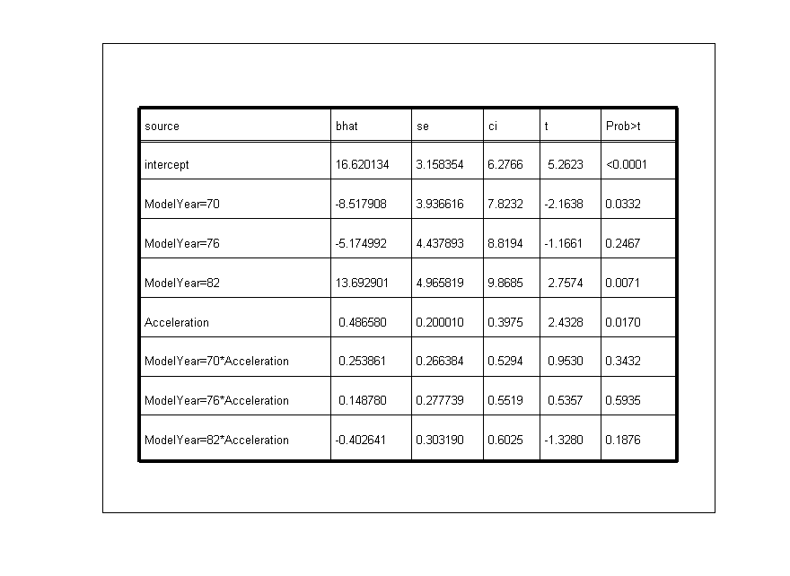
Custom Models
The 3rd input argument to encode controls how the variables are confined to build the terms of the model. The simplest use is as a scalar. If model is a scalar it builds refers the highest degree interaction in the model, and will use factorial design up to that degree. In this context 0 has a special meaning. A 0 means to build a 1st degree model without an intercept. Model can also be a matrix. The columns of the matrix refer to each potential variable in the model. Each rows describes a term in the model. Here are some examples. In table 1
model = lmodel(2,2); % build model for 2 variables, full factorial to % degree 2, this would be as setting the 3rd % argument to encode to 2. load carsmall ModelYear = Model_Year; glm = encode( MPG, 3, model, ModelYear, Origin ); terms = model2eqn( glm.model, glm.var_names ); plot_table( table( ['term', glm.var_names'], terms, model ) );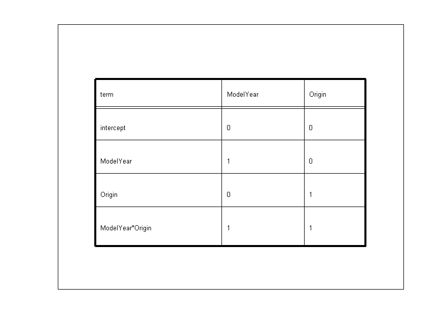
More complex custom model
model can contain any combination of variables that you want to include in the model. It may sometimes be useful to construct models that contain only the interaction term for example.
model = [ 0 0; 1 1]; % interaction plus an intercept load carsmall; ModelYear = Model_Year; glm = encode( MPG, 3, model, ModelYear, Origin ); terms = model2eqn( glm.model, glm.var_names ); plot_table( table( ['term', glm.var_names'], terms, model ) ); [x,y] = getAxisInset(.13,.85); text(x,y,'Table 1. Model matrix', 'fontsize', 14);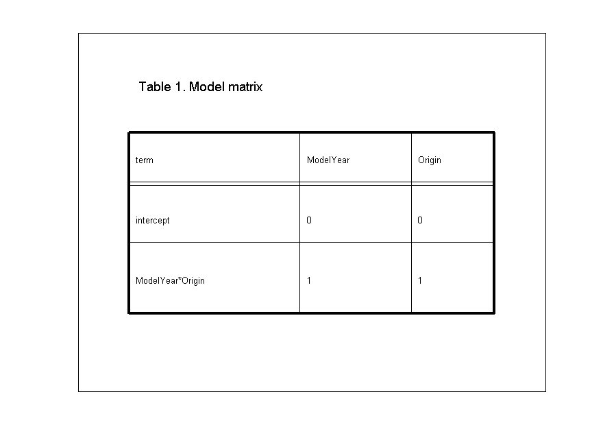
Missing values
encode uses listwise deletion to deal with missing values if a response (or factor level information) is mising for an observation. That observation is removed.
load carbig; nobs = length(MPG); % original input size nmissing = sum(isnan(MPG)); % number of missing values glm = encode(MPG); % very trivial use of encode that builds a % model with only an intercept. It will still % remove observations with any missing % information tbl = table( {'' ''}, ... {'length before encode', 'number missing', 'length after encode'},... [nobs nmissing length(glm.y)] ); plot_table(tbl);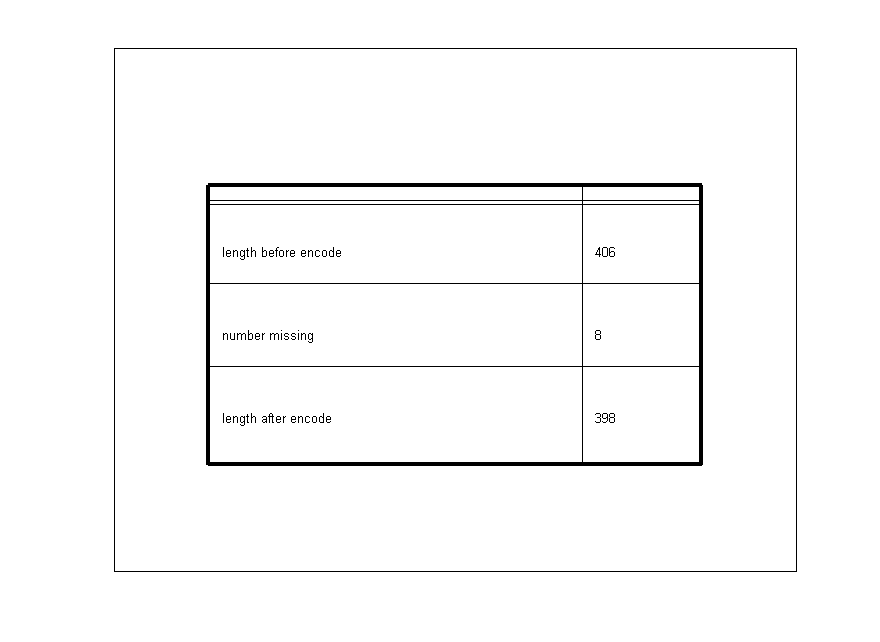
Multiple Response Variables
Models with multiple response are encoded the same way as above using a matrix as the 1st input argument to encode. As before each row is an observation and each column is a variable that was observed or measured. Models with multiple response can be treated either as a set of independent variables, as is the case with univariate methods. Or they can be treated as a group of related variables. In either case the model is the same and the difference is in which function is called with the model. e.g. anova(glm) is univariate while manova(glm) is multivariate Using the carsmall example
load carsmall; y = [MPG Acceleration Weight Displacement]; glm = encode(y, 3, 1, Origin ); % you can solve for each column separately % now we can solve as usual lsq = solve(glm); tbl = table( {'source', 'MPG', 'Acc', 'Weight', 'Displacement'}, ... lsq.source, lsq.beta ); plot_table( tbl);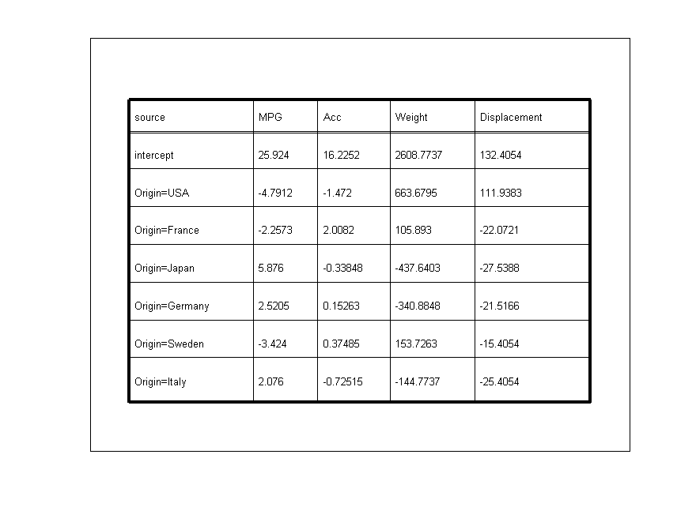
Missing Values with Multiple Responses
Remember that encode uses listwise deletion. If an observation is missing data on any of the columns, then the entire observation is removed. If you have many variables that are peppered with missing values, you may be removing more observations than you want to. There is a mechanism built into encode that can help deal with this. Instead of listwise deletion, you may prefer ignoring some of the variables. This can be done as shown in the code below.
% calling encode without the reponse variable skips the listwise % deletion of missing responses glm = encode([], 3, 1, Origin); % now set the response. Still use glm.missing to do listwise deletion % of observations that have NaNs in an explanatory variable (if any) % Because an explanatory variables applies to every response variable it % makes sense to do listwise deletions of these. glm.y = y(~glm.missing,:); % add reponses (only MPG has missing % values) lsq = solve(glm); % solves for each column separately tbl = table( {'source', 'MPG', 'Acc', 'Weight', 'Displacement'}, ... lsq.source, lsq.beta ); plot_table( tbl);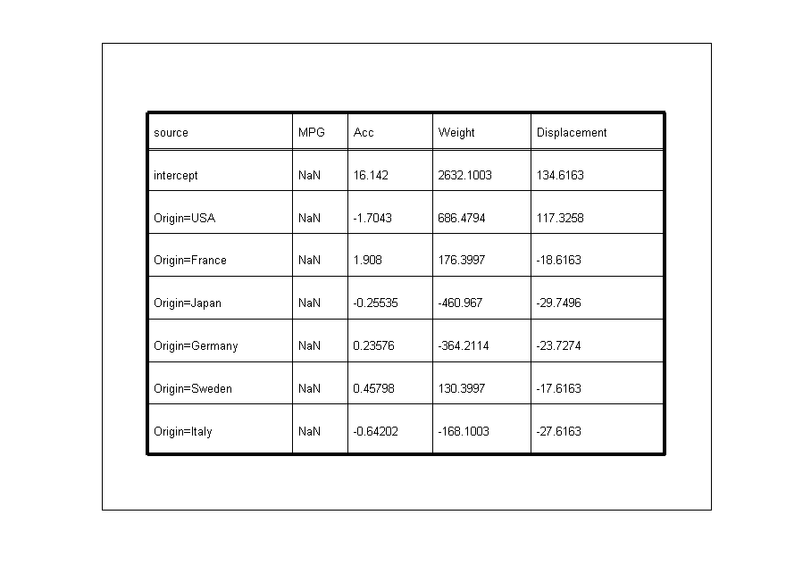
Imputing missing values (I)
if listwise deletion and variable deletion aren't what you want, then you may impute missing values using a model-based approach. You will notice that the estimated coefficients for MPG are the same as the first table because the imputed values use the within-group mean as the replacement value. The other variables have the same coefficients as the second table because no listwise deletion was performed.
glm = encode( [], 3,1,Origin ); % no reponse glm.y = impute(y, glm); % impute the missing values (if possible) lsq = solve(glm); % solves for each column separately tbl = table( {'source', 'MPG', 'Acc', 'Weight', 'Displacement'}, ... lsq.source, lsq.beta ); plot_table( tbl);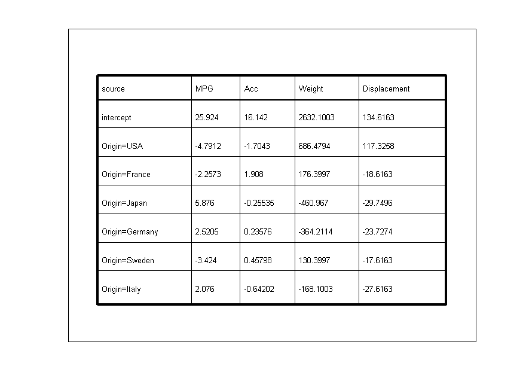
Imputing missing values (II)
you might consider adding some random noise to the imputed values otherwise the mean-square error will be underestimated. If you are only after the estimates of the coefficients, then this may not be necessary, but if you want to do some sort of inference, then this may be important. Here is one way to add noise. You'll notice in the table below that the estimates for the MPG are different than before. The estimates for the other columns are the same as without listwise deletion because we're not adding noise to them.
% The 2nd return from impute can be used to % find which values were imputed. [glm.y missing] = impute(y, glm); % impute the missing values [nobs, nvars] = size(missing); nmissing = sum(missing); % estimate the mean square error for each variable lsq = mstats(glm); % recalculate std as if the missing values were removed the imputed values % won't increase the sum of squares for the error because the imputed % values are equal to the mean. Thus all we need to do is recompute the % mean square error using the correct degrees of freedom std = sqrt( lsq.sse./(lsq.dft - nmissing) ); % generate noise based on the estimated std e = normrnd( zeros( nobs, nvars ), repmat(std,nobs,1)); % add noise to only the imputed observations glm.y(missing) = glm.y(missing) + e(missing); lsq = solve(glm); % solves for each column separately tbl = table( {'source', 'MPG', 'Acc', 'Weight', 'Displacement'}, ... lsq.source, lsq.beta ); plot_table( tbl);
Nested models
it is possible to build nested models, but you have to manually set up the constraints matrix and maybe the tests. This tool offers little help to uninitiated for building such models. Hint: a nested model is also called a heirarchical model. The inner terms contain and explain all of the effects of the outer terms. You'll need to build a set of models that tests the inner terms in terms of the outer models
Nested data
I have three examples using a artificial dataset nested has a response = outer + inner(outer) + other + e The factor data called inner contains the effects of outer, because it is completely nested within outer. If you knew the level of the factor inner, you can infer the level of factor outer
load nested % the data plot_table( table( {'reponse', 'outer', 'inner', 'other'}, [y outer inner other] ));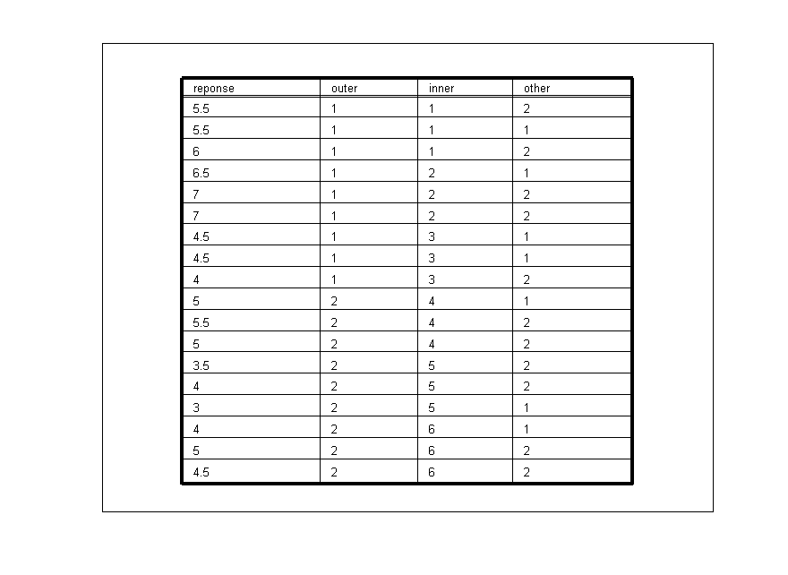
Setting up unnested model on nested data
If you try to analyze the unnested model, response = outer + inner + other using an ANOVA several warnings will be issued about singular matrices. Also, anova will not be give inferences on the outer term. This is because there is no more variance to explain if inner is already in the model.
% first, here is the standard unnested model glm = encode( y, 3,1, outer, inner, other ); a = anova(glm); plot_table( anova_table(a) ); [xx,yy] = getAxisInset(0.1,.95); text(xx,yy,'Attempted ANOVA from model outer + inner + other');
Warning: singular matrix to working precision Warning: singular matrix to working precision Warning: singular matrix to working precision Warning: some terms are not full rank Warning: Divide by zero.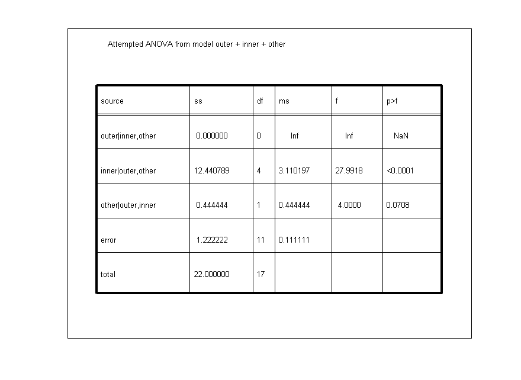
Setting up a nested model
The reason why there is no more variance to explain is that we let the coefficients for inner take on any values that sum to 0 across all 6 levels of inner. What we intend to do in a nested model is constrain the coefficients so that they sum to zero within the term they contain. Below is a table showing the constraints for a standard and nested model
figure plot_table( table( ['coeff'; glm.coeff_names], 1:4, glm.cmat)'); [xx,yy] = getAxisInset(0.1,.95); text(xx,yy,'Constraints from model outer + inner + other'); figure % set up constraints cmat = zeros( 4, length(glm.coeff_names )); cmat(1,glm.terms==1) = 1; % outer sums to 0 cmat(2,glm.terms==3) = 1; % other sums to 0 cmat(3,4:6) = 1; % inner(outer==1) sums to 0 cmat(4,7:9) = 1; % inner (outer==2) sums to 0 glm.cmat = cmat; % save it glm.df0(2) = 4; % correct df for the nested term plot_table( table( ['coeff'; glm.coeff_names], 1:4, glm.cmat)'); [xx,yy] = getAxisInset(0.1,.95); text(xx,yy,'Constraints from model outer + inner(outer) + other');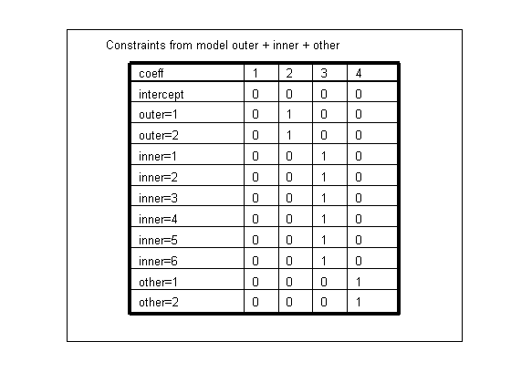

Solving a nested model I
You can solve this nested model and get the same results as SAS/JMP using the following code. SAS/JMP uses a sstype III as shown even in a heirarchical model. They undoubtedly have a reson for this, but my inituition suggests it makes more sense to leave out the inner terms when calculating the effect of the outer terms. You can use this later method using custom tests in the anova (see below).
figure a = anova(glm); plot_table( anova_table( a ) ); [xx,yy] = getAxisInset(0.1,.95); text(xx,yy,'SAS/JMP approach to nested model (sstype III)'); % Sequential tests % outer effect without the inner given that other is in the model % inner effect given that outer and other in the model % then other given that outer and inner are in the model [tests,reference] = gettests(glm); tests(1,2) = 1; % drop inner from the first model % it now has only the "other" effect reference(1) = 2; % compare the first model to the second % which has outer and other effects figure a = anova(glm, tests,reference); plot_table( anova_table( a ) ); [xx,yy] = getAxisInset(0.1,.95); text(xx,yy,'My approach to nested model');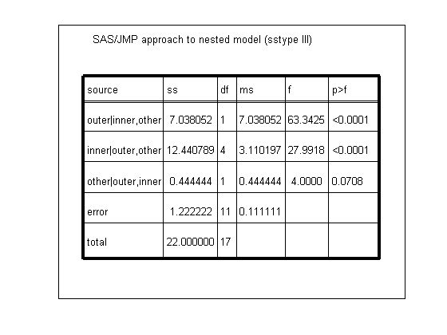 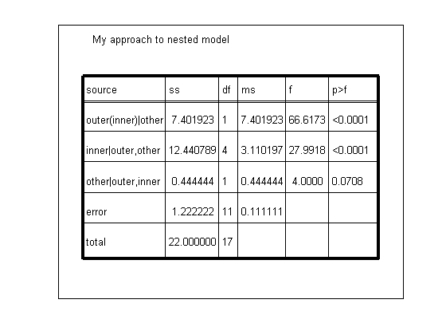